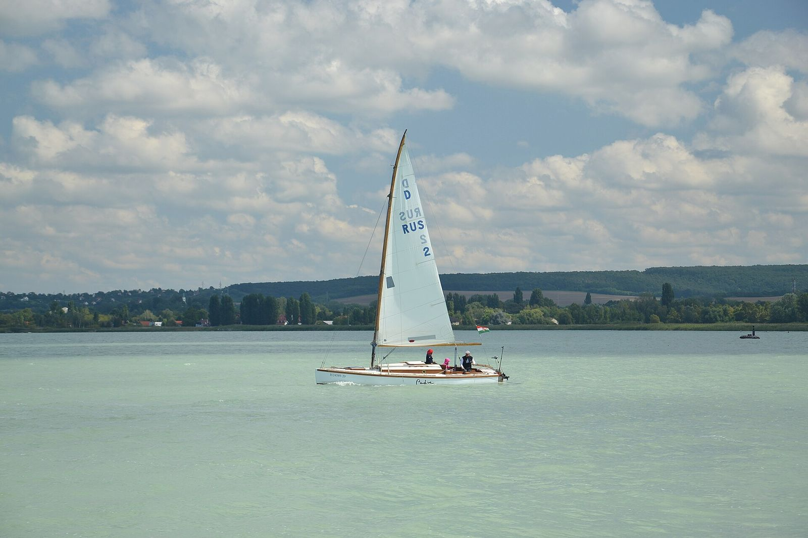
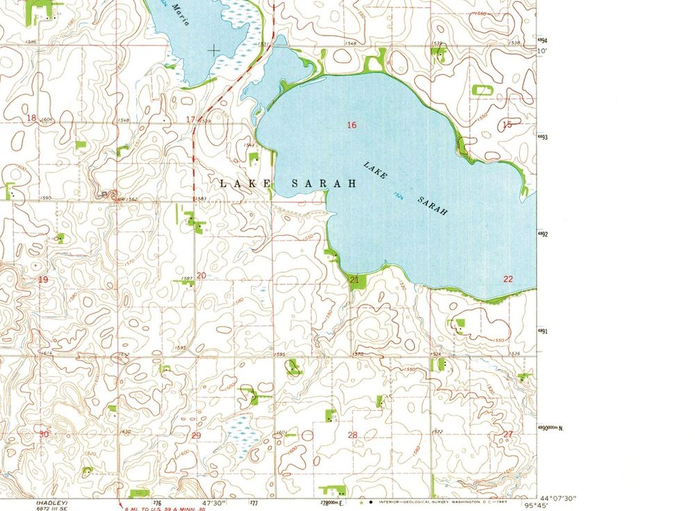
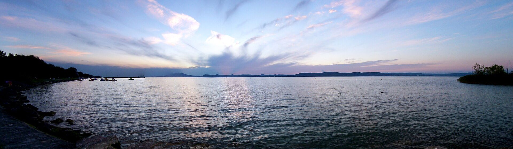
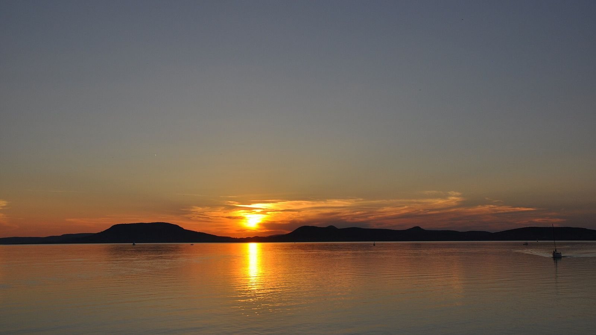
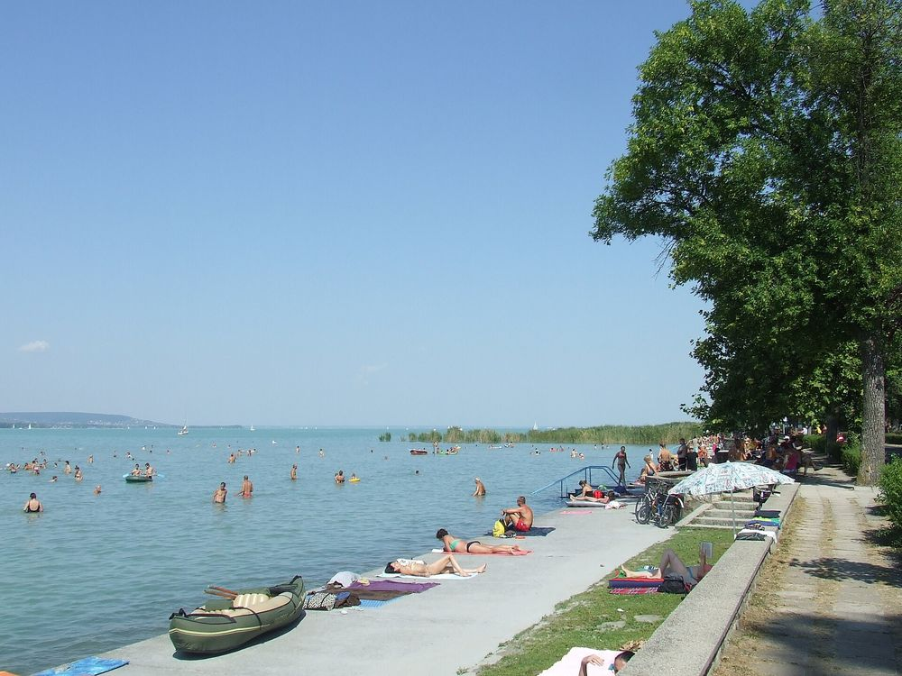
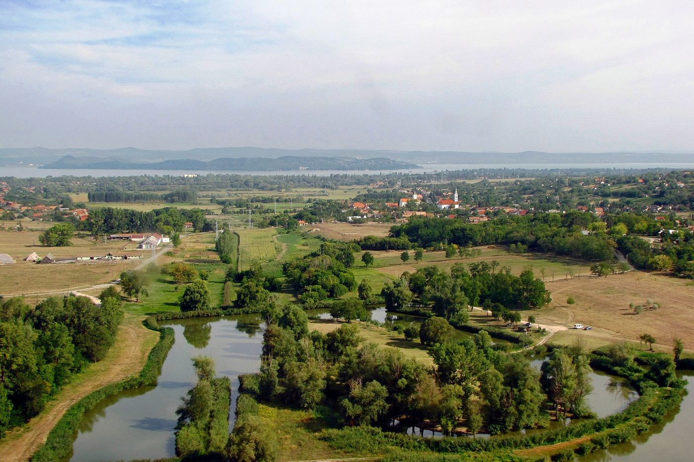

Balaton Guide · magazin01
Nyári füzet a part mentén
Válogatás a nyári partmenti hangulatokból: rövid riportok, fotóesszék és egy minden lapszámban megújuló térképmelléklet.
Koncepcióborító01 / 06
Balaton Guide — ingyenes kiadványok a Balaton körül
Ingyenes kiadványok, tematikus térképek és magazinok a Balaton körül.

Látványterv · nem valós megjelenés
Görgess — 01 / 06
01 Kiadványbemutató
A Balaton Guide a part mentén születő helyi anyagokból építkezik: letisztult térképek, szerkesztett magazinoldalak és rövid történetek. Az alábbi blokkok megnyitásával lapozható koncepció-előnézet indul — nem valódi megjelent kiadvány.

Térképrészlet
A térképek világa a nyomdai részletekből épül fel: vonalvastagságok, jelrendszerek, papírszín. A fenti valós, közkincs topotérkép-részlet hangulati referencia — nem a Balaton Guide kiadványa.

02 A Balaton Guide-ról
„Ingyenes kiadványok a Balaton körül, tematikus térképek és magazinok.”
A Balaton Guide nyilvános leírása alapján ingyenes kiadványokkal, tematikus térképekkel és magazinokkal foglalkozik a Balaton körül. Ez a látványterv ezeket a kiadványokat mutatja be egységes arculattal, és előkészíti a későbbi webes ügyfélfelületet.
03 Együttműködés

Ha tervezel egy megjelenést, egy térképet vagy egy magazinanyagot a Balatonnál, érdemes előre egyeztetni a grafikai kereteket: tipográfia, oldalrendszer, borító és térképjelrendszerek.
04 Ügyfélfelület-koncepció
Külön, megnyitható bemutató a későbbi ügyfélfelület vizuális előnézetével. A funkciók még egyeztetendők; a bemutatóban nincs valódi belépés, adatküldés vagy sikeres feltöltés.
A kiadvány aktuális állapota, a demóprojekt adatai egy helyen.
A kiválasztott fájl helyben jelenik meg a böngészőben, nem kerül feltöltésre.
Lapozható koncepció-oldalak, ugyanazzal a vizuális rendszerrel.
Megjegyzések és jelzett állapotok — kizárólag a bemutatóban.
05 Makka Print / Ágnes
Matastik
Ágnestervezőszerkesztő · 2016 óta szabadúszó
2016 óta dolgozik szabadúsként: grafikai tervezés és szerkesztés a Makka Printnél, online együttműködésben. A Balaton Guide látványtervében a kiadványok grafikai rendszere és a webes felület előzetes arculata szerepel.
06 Kapcsolat
Írd meg röviden, miben gondolkodsz. A gomb egy előre kitöltött e-mailt nyit meg a leveleződben — az üzenet nem kerül automatikus elküldésre.
Balaton Guide · magazin01
Nyári füzet a part mentén
Válogatás a nyári partmenti hangulatokból: rövid riportok, fotóesszék és egy minden lapszámban megújuló térképmelléklet.
Koncepcióborító01 / 06
Balaton Guide · térkép02
Tematikus térkép — parttól partig
A térkép a magazin mellékleteként, egyszerűsített jelrendszerrel: partmenti települések, javasolt tematikus útvonal, letisztult tipográfia.
Koncepciótérkép02 / 06
Balaton Guide · riport03
Esti fények a vízen
A Balaton hangulata a leghűbben a fényekben írható le. Néhány mondat arról, mitől marad emlékezetes egy nyári este a tavon — a valódi szöveget a szerkesztés állítja majd össze.
Oldalmező: kép + háromoszlopos szöveg, futó oldalszám, apró jegyzetek a margón.
Koncepció-oldal03 / 06
Balaton Guide · fotóesszé04


Kép és kép között levegő: a fotóesszé-oldalakon a képek viszik a történetet, a szöveg csak kísér.
Koncepció-oldal04 / 06
Balaton Guide · nyomdai részlet05
Papír, vonal, jelrend
A kiadvány rendszere három dologra épül: karakteres groteszk címsorok, elegáns serif kiegészítések és következetes oldalrács. A térképrészletek a margókról indulnak, az oldalszám mindig azonos helyen.
A jobb oldalon valós, közkincs topotérkép-részlet — hangulati referencia, nem a kiadvány része.
Koncepció-oldal05 / 06
Balaton Guide · imprimatur06
Ez egy koncepció, nem megjelent kiadvány.
A látványtervben szereplő borítók, térkép és oldalak saját tervezésű mintadarabok, „Koncepcióborító” jelöléssel. Valódi borító vagy PDF hiányában nincs letöltés és nincs működést ígérő gomb. Fotók: licencelt balatoni felvételek a Wikimedia Commonsról (forrásjegyzék: assets/SOURCES.md). Tervezés: Makka Print — Matastik Ágnes.
Koncepció-előnézet06 / 06
Billentyűzettel: ← → lapozás, Esc bezárás